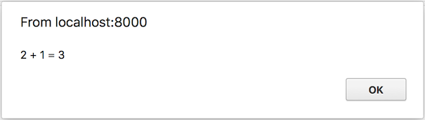

wasm32-unknown-unknown的"Hello World"
生成一个基本的"hello world":
$ cargo +nightly new --lib hello-world
接下来改变Cargo.toml具有:
[lib]
crate-type = ["cdylib"]
并编辑src/lib.rs:
# #![allow(unused_variables)] #fn main() { #[no_mangle] pub extern fn add_one(a: u32) -> u32 { a + 1 } #}
现在准备wasm二进制文件:
$ cargo +nightly build --target wasm32-unknown-unknown --release
# make the binary smaller by removing all unneeded exports, imports, and functions
# (working around bugs in rustc toolchain)
$ wasm-gc target/wasm32-unknown-unknown/release/hello_world.wasm -o hello_world.gc.wasm
我们可以用以下方法测试它:
<!DOCTYPE html>
<html>
<head>
<script>
WebAssembly.instantiateStreaming(fetch('hello_world.gc.wasm'))
.then(wasmModule => {
alert(`2 + 1 = ${wasmModule.instance.exports.add_one(2)}`);
});
</script>
</head>
<body></body>
</html>
注意: 要运行instantiateStreaming和compileStreaming,你需要你的网络服务器来获取.wasm文件带有application/wasmMIME类型. 该https crate 可用于提供文件localhostip,并包括application/wasmMIME类型开箱即用.
或者,如果您在本地运行而没有任何Web服务器.
<!DOCTYPE html>
<html>
<head>
<script>
fetch('hello_world.gc.wasm')
.then(r => r.arrayBuffer())
.then(r => WebAssembly.instantiate(r))
.then(wasmModule => {
alert(`2 + 1 = ${wasmModule.instance.exports.add_one(2)}`);
});
</script>
</head>
<body></body>
</html>
如果安装了Python 3,您也可以使用 Python 的内置 Web服务器 来localhost提供此文件. Python的 Web服务器 无法提供服务instantiateStreaming和compileStreaming, 由于缺乏支持application/wasmMIME类型.
$ python3 -m http.server
确保您的浏览器支持Wasm. 两种选择:
-
搜索您的浏览器版本的 Wasm支持caniuse.com
使用浏览器打开HTML文件,您应该看到:
